地政学
アブダビは連邦首都であり、王宮、官庁、大使館、投資機関が集まる。ホルムズ海峡に近い湾岸で、石油輸出、米欧中印との関係、イランへの対応を調整する判断の場です。海上交通とエネルギー安全が重みを強める。

🇦🇪 アラブ首長国連邦 / アジア / World City Atlas
湾岸の島に置かれた連邦首都。石油、政府系ファンド、行政、移民労働、宗教、文化投資、海辺の暮らしが重なる都市です。
都市の骨格
アブダビは高層景観だけで読む都市ではありません。島の地理、石油収入、連邦政治、政府系ファンド、移民労働、宗教規範、文化施設、暑熱と水の管理が同じ首都空間に重なります。
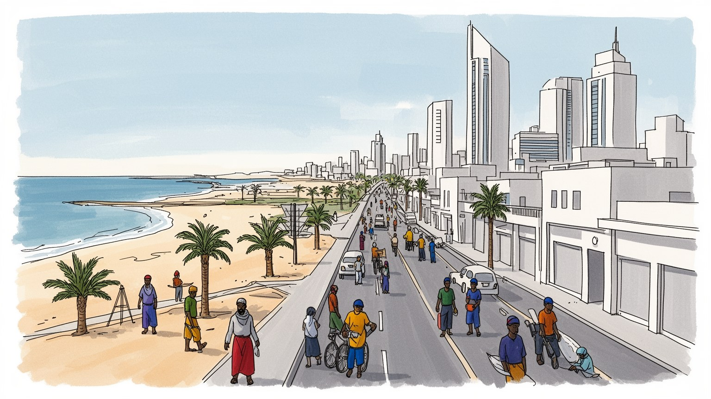
アブダビは連邦首都であり、王宮、官庁、大使館、投資機関が集まる。ホルムズ海峡に近い湾岸で、石油輸出、米欧中印との関係、イランへの対応を調整する判断の場です。海上交通とエネルギー安全が重みを強める。
石油、ガス、政府系ファンド、港湾、航空、防衛、建設、観光投資が都市を支える。現場では南アジアや東南アジアの移民労働者が清掃、警備、家事、建設、飲食、物流を担い、首都の日常を動かす。雇用改善も重要な課題だ。
イスラムの礼拝、ラマダン、家族、首長家の儀礼が公共空間の節度を作る。同時にルーヴル、大学、映画祭、各国料理、教会や寺院が増え、国民の伝統と移民の文化が慎重に同居する首都。寛容は管理された秩序の中で育つ。
海岸道路、郊外住宅、モール、学校、モスク、労働者宿舎が生活圏を作る。観光ではシェイク・ザーイド・グランド・モスク、ルーヴル、砂漠、マングローブ、島のリゾートが都市の入口になる。暑さと車移動も日常を左右す。
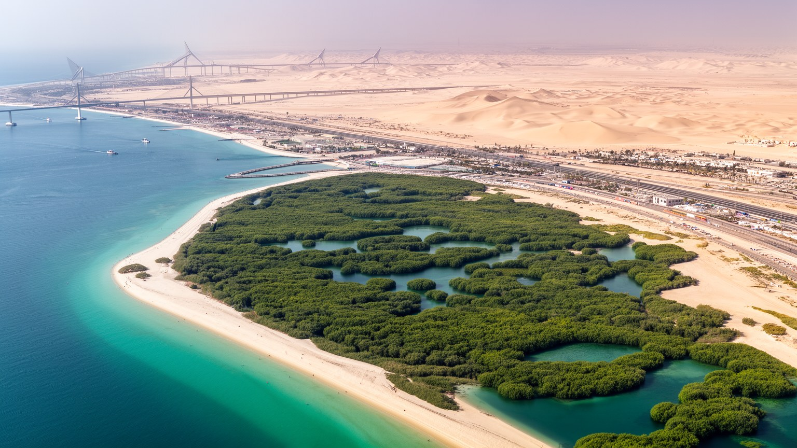
アブダビの中心は、ペルシャ湾に浮かぶ低い島から始まる。海岸、浅瀬、マングローブ、干潟、砂漠の縁が近く、都市の拡張は橋、埋立地、幹線道路、郊外開発によって本土へ伸びてきた。高層ビルや官庁街が並ぶ現在の景観だけを見ると、自然条件が薄く見えるが、島であることは首都の性格を今も決めている。海は防衛、交易、漁業、真珠採りの記憶を残し、同時に石油輸出、港湾、観光、冷却水、淡水化と結びつく。周辺のマングローブやラグーンは生態系であり、都市の暑さを和らげる緩衝帯でもある。中心部のコーニッシュから郊外へ移動すると、整備された海辺、政府機関、住宅地、労働者の通勤路、空港道路、砂漠の余白が連続して現れる。アブダビは水辺の首都だが、雨が少なく淡水を外部技術に頼る乾燥都市でもある。この矛盾が都市の基本条件であり、海岸の美しさと資源管理の重さを同時に読む必要がある。島の地形は、首都を劇的に見せる舞台であると同時に、成長の限界を示す境界でもある。橋を渡るたびに、行政の中心、観光の島、住宅地、産業地区が分かれて見え、土地利用の管理が首都の秩序を作っていることが分かる。砂漠と海の近さは、都市を開放的に見せながら、拡張のたびに環境負荷を突きつける。潮位、風、砂、埋立の線を読むと、首都の地図は政治地図である前に環境の地図でもある。
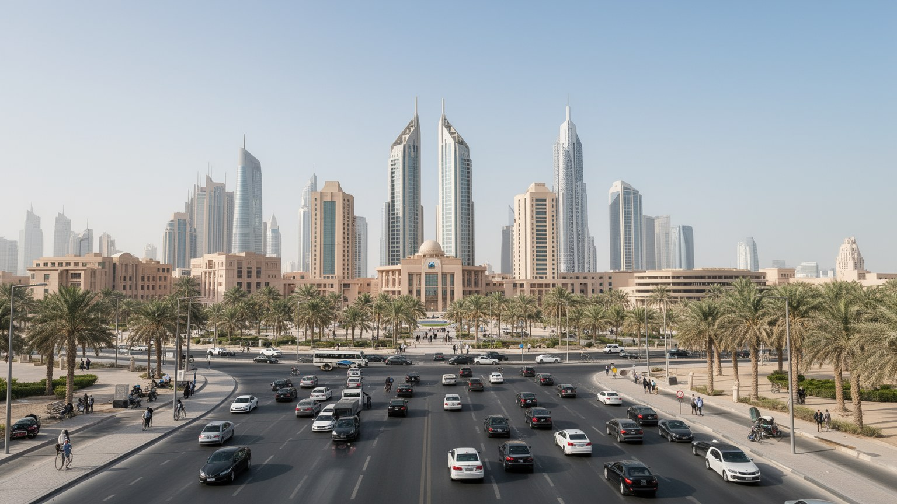
アブダビはアラブ首長国連邦の首都であり、同時に最大の面積と石油資源を持つ首長国の中心である。連邦政府、王宮、外交施設、軍事、治安、国営企業、規制機関が集まり、ドバイの商業的な開放性とは異なる重みを持つ。連邦は七つの首長国の連合であり、各首長国の自治とアブダビの財政力、ドバイの交易力が均衡を作ってきた。アブダビの政治は議会制民主主義とは違い、首長家、部族的な結合、官僚機構、国営企業、国際同盟を組み合わせて動く。市内の広い道路、官庁街、式典空間、警備の配置には、国家が自らを秩序ある近代国家として見せる意図が現れる。外交面では、イラン、サウジアラビア、米国、中国、インド、紅海とインド洋の安全保障が関わる。国内面では、国民福祉、移民労働、女性の教育、宗教規範、経済多角化を調整する必要がある。アブダビを読むことは、湾岸都市を観光や高層景観だけでなく、国家運営の装置として見ることでもある。首都の静かな秩序は、資源、外交、治安、合意形成が支える政治的な景観である。大使館街、会議場、政府系企業の本部、軍事関連施設は、外からは穏やかに見えても地域政治の緊張と結びつく。連邦の顔としての首都は、国民に安定を示し、外国企業や同盟国には信頼できる統治を見せる舞台でもある。行政の近さは都市の速度を上げ、許認可や投資判断を日常の建設風景へ変える。
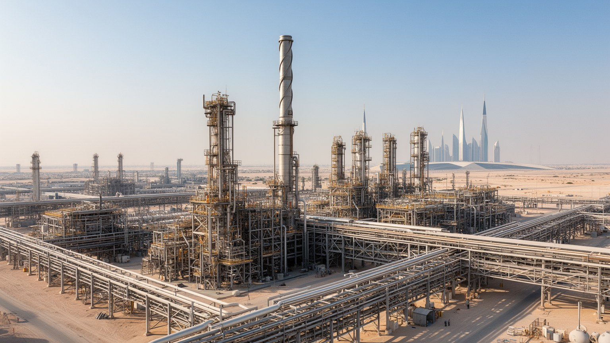
アブダビの経済的な重みは、石油とガスに支えられている。油田、輸出施設、国営エネルギー企業、港湾、パイプライン、金融機関が結びつき、地下資源の収入は都市の道路、官庁、学校、病院、住宅、文化施設へ変換される。さらに政府系ファンドは、石油収入を世界の株式、不動産、インフラ、技術企業へ投資し、将来世代の資産として運用する。これは単なる金融技術ではなく、資源が有限であることを前提に、首長国が国家の時間を延ばす仕組みである。アブダビでは、公共部門の雇用、国民向け福祉、企業誘致、文化施設、航空や港湾の整備が、この資本力を背景に進む。一方で、脱炭素化が進む世界では、石油収入に依存するモデルの持続性が問われる。再生可能エネルギー、低炭素技術、金融、観光、教育、医療を育てる政策は進んでいるが、資源収入が都市の余裕を生む構造はなお強い。アブダビの豊かさを見るときは、豪華な建築だけでなく、価格変動、気候政策、国際投資のリスク、国民と外国人の分配差も見る必要がある。石油は地下の富であると同時に、都市の制度と未来を形作る政治資源である。投資収益は世界経済の変動を首都へ持ち込み、遠い市場の金利や株価が公共事業や雇用の余裕にも影響する。資源を使って資源後の都市を準備する難しさが、アブダビ経済の核心にある。その緊張が街の投資判断を動かす。
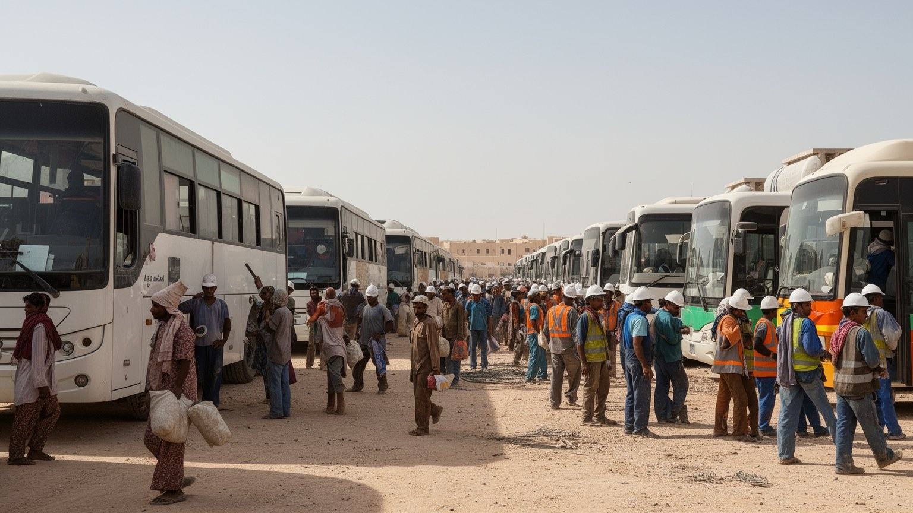
アブダビの人口の多くは外国人であり、都市の運営は移民労働によって支えられている。南アジア、東南アジア、アフリカ、アラブ諸国から来た人びとが、建設、清掃、警備、家事、運転、飲食、ホテル、病院、物流、港湾で働く。首都の広い道路、清潔なモール、整った海岸、公的施設の維持は、こうした日々の作業なしには成り立たない。高所得の専門職、国営企業の職員、サービス業の労働者、労働者宿舎に住む現場労働者は、同じ都市にいながら住宅、移動、休日、家族帯同、医療へのアクセスが大きく異なる。雇用主や在留資格に依存しやすい制度では、賃金遅配、仲介料、契約変更、長時間労働、暑熱下の作業が問題になりやすい。改革や監督の仕組みは進んできたが、低賃金の労働力を前提に急成長した都市構造は簡単には変わらない。労働者の送金は故郷の家族を支え、アブダビの建設現場は遠い村や都市の生活ともつながっている。首都を理解するには、王宮や美術館だけでなく、早朝のバス、宿舎、食堂、休日の集まりを都市の重要な風景として読む必要がある。暑さの中で働く人の休憩、水分、賃金、相談窓口は、都市の人権水準を測る具体的な物差しである。便利で安全な首都の印象は、見えにくい労働時間と移動時間に支えられている。契約更新や送金額の変化は、個人の将来だけでなく、都市が労働をどう評価するかを映す。
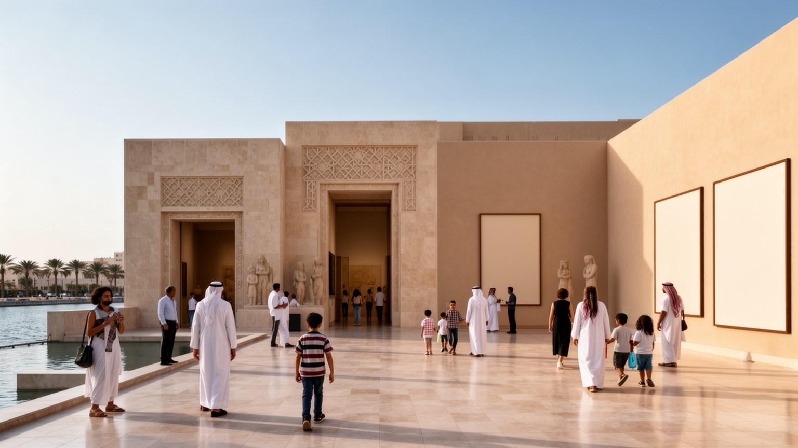
アブダビは近年、文化施設への大規模な投資によって、石油首都という印象を変えようとしてきた。サディヤット島の美術館、大学、文化地区は、世界的な建築、学術交流、観光、国家ブランドを結びつける計画である。ルーヴル・アブダビはその象徴であり、イスラム世界、欧州、アジア、アフリカの作品を並べることで、湾岸都市を文明交流の場所として見せる。文化投資は観光収入だけでなく、国民教育、国際的な評価、外交の柔らかい力を狙う政策でもある。一方で、美術館の輝きは、建設労働、知的所有権、展示の視点、地域の表現者の居場所をめぐる問いも生む。外から持ち込まれたブランドが都市の文化を代表しすぎると、首長国の生活文化や移民コミュニティの表現が背景に退く危険がある。アブダビの文化は、美術館だけでなく、詩、鷹狩り、海の記憶、家族の祝祭、モスク、学校、各国料理、労働者の余暇にも宿る。文化地区を読むには、建物の美しさと同時に、誰がそこへ入り、誰の物語が展示され、誰の労働で運営されているかを見る必要がある。首都の新しい顔は、世界への開放と地域の記憶の間で作られている。観光客が訪れる展示室と、住民が学び集まる教室や図書館がつながるとき、文化投資は広告を越えて都市の公共性になる。開かれた文化都市を名乗るほど、身近な表現の場も重要になる。
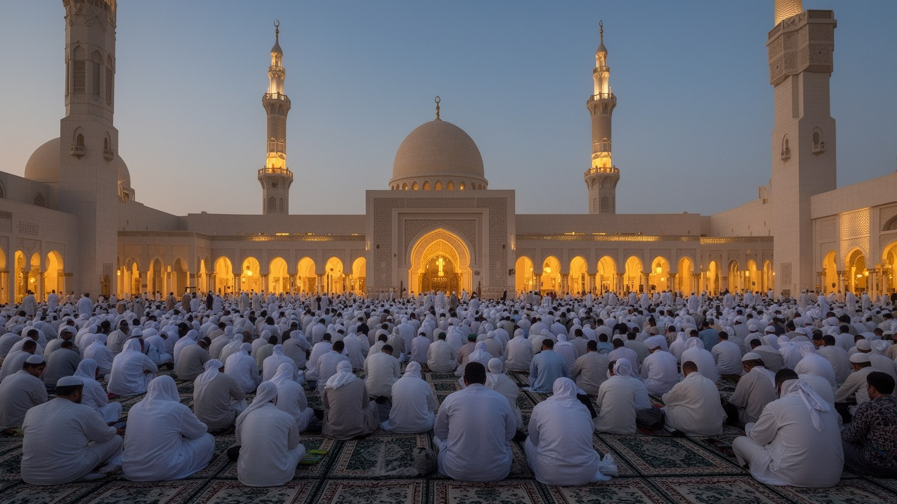
アブダビの日常には、イスラムの礼拝時間、ラマダン、家族の集まり、慈善、モスクの音と静けさが深く入り込んでいる。シェイク・ザーイド・グランド・モスクは観光名所である前に、国家の宗教的な姿勢と建築的な象徴を重ねた場所である。白い大理石、広い中庭、礼拝空間は、首長国が信仰、威厳、寛容をどのように見せたいかを示す。公共空間では服装、飲酒、礼拝、家族、男女の距離、ラマダン中の振る舞いに独自の節度があり、外国人居住者や観光客もその枠内で生活する。近年は教会、寺院、宗教間対話の施設も整備され、非イスラム教徒の信仰にも一定の空間が与えられている。ただし、寛容は無制限の自由ではなく、国家が管理する秩序の中で設計されている。宗教は政治と切り離された私事ではなく、国民のアイデンティティ、公共の礼儀、教育、休日、観光、外交の表現に関わる。アブダビを読むには、モスクの壮麗さだけでなく、金曜礼拝の移動、断食明けの食卓、移民労働者の祈り、異なる信仰を持つ人びとの静かな調整を見る必要がある。信仰は都市の速度を整え、首都の公共性を形作っている。学校や職場の時間、食堂の営業、家族向け空間の設計にも宗教的な暦が映る。祈りの場は観光写真の対象である以上に、都市が多国籍な住民を同じ秩序へ招き入れる入口である。静けさへの配慮が、異なる生活習慣を結ぶ実務になる。
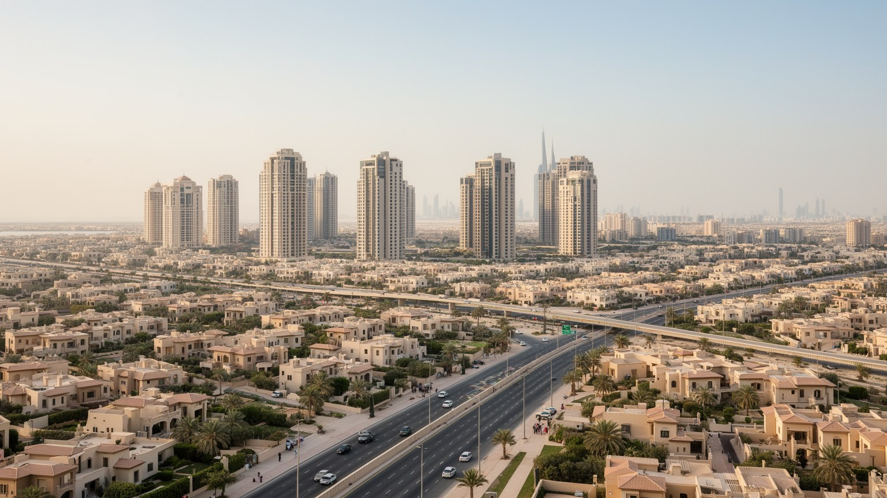
アブダビの暮らしは、島の中心部だけでなく、郊外住宅、幹線道路、学校、モール、モスク、職場、労働者宿舎の広がりとして経験される。国民向けの住宅政策は、家族の広さ、プライバシー、親族との近さを重視し、低層住宅や庭のある住まいを都市の外側へ伸ばしてきた。外国人専門職は高層マンションやサービスアパートメント、郊外の住宅区に住み、低賃金労働者は職場から離れた宿舎や共同住宅に暮らすことが多い。同じ首都でも、家族を呼べる人と単身で働く人、車を持つ人と通勤バスに頼る人では、都市の距離感がまったく違う。車中心の道路網は移動を速くする一方、徒歩や公共交通の生活を難しくし、暑さは屋外の移動をさらに厳しくする。住宅の質は室内だけでなく、学校、診療所、公園、日陰、買い物、礼拝場所、職場への接続で決まる。急速な開発は便利な新地区を生むが、家賃、管理費、通勤時間、地域のつながりをめぐる負担も生む。アブダビの住宅を読むことは、石油で得た豊かさが誰にどのような住まいとして配分され、外国人労働者にはどの程度の生活条件が与えられているかを見ることでもある。郊外の静けさと宿舎の密度は、同じ都市の別々の現実である。住宅地の成熟は、広い家を供給するだけでなく、子どもが歩ける道、女性が働き続けられる距離、労働者が休める余白を整えることでも測られる。
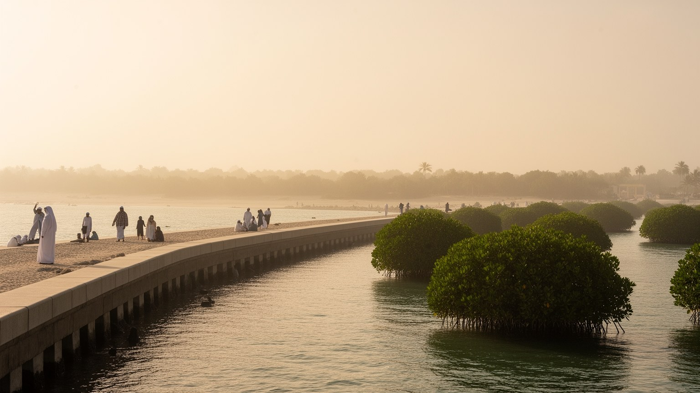
アブダビの気候は、砂漠の酷暑と湾岸の湿った海風が重なる。夏は屋外で過ごす時間が限られ、通勤、建設、観光、学校、礼拝、運動のリズムは暑さに合わせて調整される。冷房された住宅、車、モール、空港、オフィスは生活を可能にするが、同時に大きな電力需要を生む。飲料水、緑化、ホテル、清掃、工事、冷却には大量の水が必要で、海水淡水化と長い送水、再生水の利用が都市を支える。海岸の開発は美しい景観と観光を生む一方、埋立、海面上昇、高潮、海水温の上昇、マングローブや干潟への影響を考えなければならない。気候変動が進むほど、酷暑は屋外労働者、高齢者、低所得者に重くのしかかる。暑さを避けられる人と避けられない人の差は、都市の格差として現れる。アブダビの環境政策は、太陽光発電や効率化だけでなく、日陰の歩道、労働時間の規制、涼める公共空間、節水型の緑化、沿岸生態系の保全として考える必要がある。海辺の快適さは自然に与えられたものではなく、エネルギー、水、労働、規制によって維持される人工的な快適さである。観光客が感じる涼しい室内と、屋外で働く人が受ける熱の差は大きい。気候への適応は、技術の問題であると同時に、誰を優先して守るかという社会政策でもある。海岸の未来は、都市の贅沢と生存条件が同じ場所で試されることを示している。
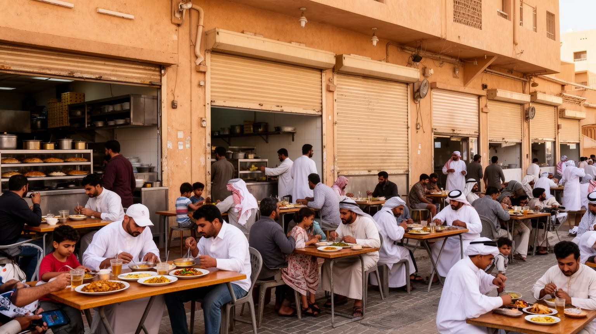
アブダビの食と日常は、首長国民の家庭文化と移民社会の多様さが重なる。マチブース、魚料理、デーツ、アラビックコーヒー、香辛料は、家族の集まり、来客、ラマダン、祝祭と結びつく。もてなしの作法は単なる食事ではなく、家族、名誉、信仰、地域の記憶を伝える時間である。一方で、都市の飲食店には南アジア、レバント、フィリピン、イラン、欧州、東アジアの味が並び、労働者の食堂から高級ホテルのレストランまで幅が広い。昼食の価格、配達アプリ、モールのフードコート、家庭内労働者の調理、学校の弁当、断食明けの食卓は、階層や国籍の違いを静かに映す。食料の多くは輸入と冷蔵物流に頼り、暑さは保存、配送、労働時間に影響する。市場やスーパーマーケットを歩くと、石油首都の豊かさだけでなく、湾岸がインド洋、アラブ世界、アジアの生活圏とつながっていることが分かる。観光客にとって食は文化体験だが、住民にとっては休息、送金生活の節約、家族の絆、宗教的な暦の一部である。アブダビの食卓を読むことは、首都の公式な顔の下にある日々の労働、移動、信仰、家庭の時間を見ることでもある。海の記憶は魚料理に残り、砂漠の移動生活は保存しやすい食材やもてなしの作法に残る。多国籍の食堂は、移民が故郷とのつながりを保つ小さな拠点でもある。食は都市の階層を映すが、同時に人を結び直す場にもなる。
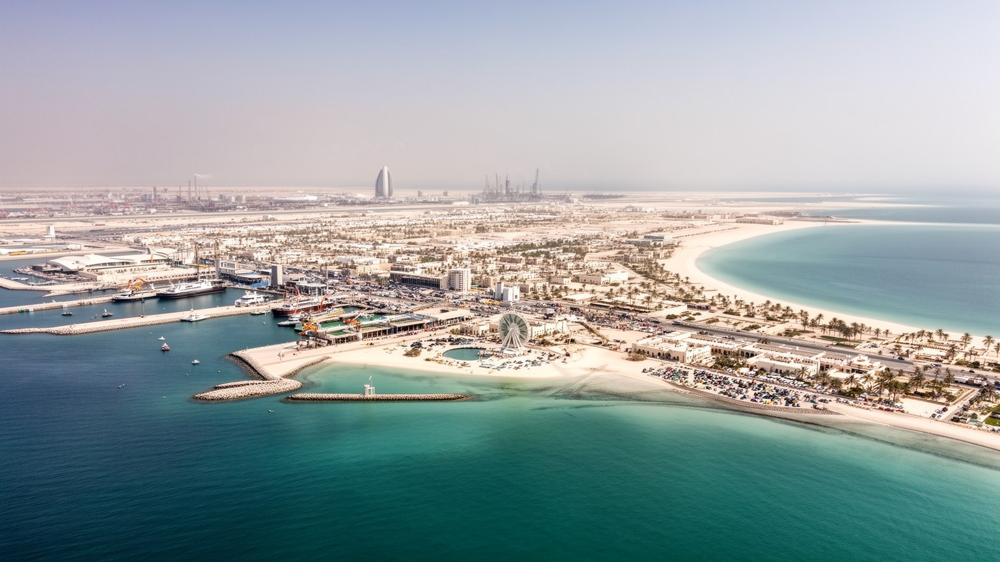
アブダビは、ドバイのような露出の強い商業都市とは違い、静かな権力と資本の厚みで世界都市として働く。連邦首都であり、石油と政府系ファンドを持ち、外交、安全保障、文化投資、国民福祉、移民労働を一つの都市空間で管理する。海岸の整った景観、美術館、モスク、高速道路、郊外住宅は、安定した首都の印象を作るが、その背後には資源価格、脱炭素化、地域紛争、労働格差、暑熱、水資源、沿岸環境という課題がある。国民は豊かな福祉と国家的な保護を受ける一方、外国人居住者は都市を支えながら政治参加や長期的な帰属に限界を持つ。文化施設は開放性を示すが、公共の言論や労働運動には管理が働く。アブダビを読むには、贅沢さを単純に称賛するのでも批判するのでもなく、資源、統治、信仰、移民、気候、生活がどのように結びつくかを見る必要がある。島の首都は、二十一世紀の湾岸国家が富を未来へ移し替えようとする実験場であり、その成功は高層建築の数ではなく、暑さの中で働く人、海辺に暮らす家族、祈る人、学ぶ人がどの程度安定して生きられるかで測られる。静かな街路の背後で、国際投資、軍事同盟、文化外交、労働者の送金、沿岸生態系がつながっている。アブダビの複雑さは、目立つ速度ではなく、長期の安定を演出し続ける仕組みにある。その安定を誰が享受し、誰が支えるのかを問う視点が必要だ。